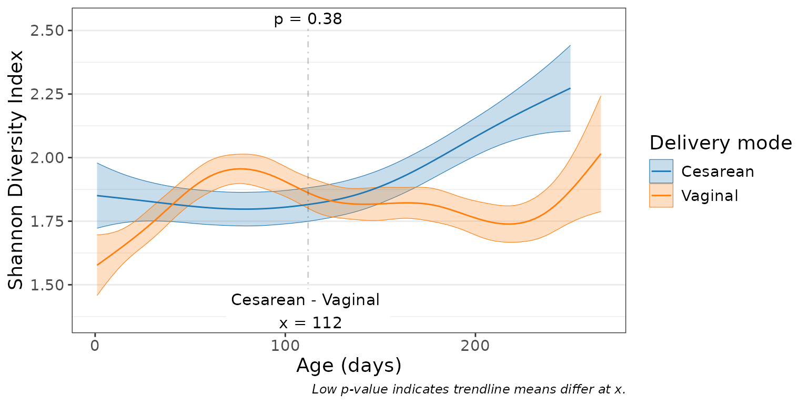

Visualize alpha diversity with scatterplots and trendlines.
Usage
adiv_corrplot(
biom,
x,
adiv = "Shannon",
layers = "tc",
stat.by = NULL,
facet.by = NULL,
colors = TRUE,
shapes = TRUE,
test = "emmeans",
fit = "gam",
at = NULL,
level = 0.95,
p.adj = "fdr",
transform = "none",
alt = "!=",
mu = 0,
strata = NULL,
caption = TRUE,
check = FALSE,
...
)Arguments
- biom
An rbiom object, or any value accepted by
as_rbiom().- x
Dataset field with the x-axis values. Equivalent to the
regrargument instats_table(). Required.- adiv
Alpha diversity metric(s) to use. Options are:
c("ace", "berger", "brillouin", "chao1", "faith", "fisher", "simpson", "inv_simpson", "margalef", "mcintosh", "menhinick", "observed", "shannon", "squares"). For"faith", a phylogenetic tree must be present inbiomor explicitly provided viatree=. Setadiv=".all"to use all metrics. Multiple/abbreviated values allowed. Default:"shannon"- layers
One or more of
c("trend", "confidence", "point", "name", "residual"). Single letter abbreviations are also accepted. For instance,c("trend", "point")is equivalent toc("t", "p")and"tp". Default:"tc"- stat.by
Dataset field with the statistical groups. Must be categorical. Default:
NULL- facet.by
Dataset field(s) to use for faceting. Must be categorical. Default:
NULL- colors
How to color the groups. Options are:
TRUE-Automatically select colorblind-friendly colors.
FALSEorNULL-Don't use colors.
- a palette name -
Auto-select colors from this set. E.g.
"okabe"- character vector -
Custom colors to use. E.g.
c("red", "#00FF00")- named character vector -
Explicit mapping. E.g.
c(Male = "blue", Female = "red")
See "Aesthetics" section below for additional information. Default:
TRUE- shapes
Shapes for each group. Options are similar to
colors's:TRUE,FALSE,NULL, shape names (typically integers 0 - 17), or a named vector mapping groups to specific shape names. See "Aesthetics" section below for additional information. Default:TRUE- test
Method for computing p-values:
'none','emmeans', or'emtrends'. Seestats_table(). Default:'emmeans'- fit
How to fit the trendline.
'lm','log', or'gam'. Default:'gam'- at
Position(s) along
regrwhere group means or local slopes are evaluated. Default:NULL, which uses the median ofregrwithin eachsplit.bystratum. A vector gives one row per position, and p-values are adjusted across all of them. Ignored by tests that do not depend on a position (e.g. a global slope withfit = "lm").- level
The confidence level for calculating a confidence interval. Default:
0.95- p.adj
Method to use for multiple comparisons adjustment of p-values. Run
p.adjust.methodsfor a list of available options. The adjustment spans every p-value in the returned table (all metrics, strata, pairs, and positions). Default:"fdr"- transform
Transformation to apply to calculated values. Options are:
c("none", "rank", "log", "log1p", "sqrt")."rank"is useful for correcting for non-normal distributions before applying regression statistics. Default:"none"- alt
Alternative hypothesis direction. Options are
'!='(two-sided; not equal tomu),'<'(less thanmu), or'>'(greater thanmu). Default:'!='- mu
Reference value to test against. Default:
0- strata
Dataset field with the blocking/subject variable. Permutation tests permute within strata; regression models include a random intercept per stratum. The plotted trendlines are descriptive fits without the strata term. Default:
NULL- caption
Add methodology caption beneath the plot. Default:
TRUE- check
Generate additional plots to aid in assessing data normality. Default:
FALSE- ...
Additional parameters to pass along to ggplot2 functions. Prefix a parameter name with a layer name to pass it to only that layer. For instance,
p.size = 2ensures only the points have their size set to2. Unprefixed parameters go to every layer whose function accepts them. An argument that no layer accepts is an error.
Value
A ggplot2 plot. The computed data points, ggplot2 command,
stats table, and stats table commands are available as $data,
$code, $stats, and $stats$code, respectively.
Aesthetics
The default colors are colorblind-friendly for up to 12 groups: Okabe and
Ito's palette ("okabe") for up to 8, and Paul Tol's ("tol") for 9-12.
Of the other palettes, "bright", "vibrant", "muted", "light", and
"carto" are also designed for color vision deficiencies. The available
categorical palette names are: "okabe", "carto", "r4",
"polychrome", "tol", "bright", "light",
"muted", "vibrant", "tableau", "classic",
"alphabet", "tableau20", "kelly", and "fishy".
Shapes can be given as per base R - numbers 0 through 17 for various shapes, or the decimal value of an ascii character, e.g. a-z = 65:90; A-Z = 97:122 to use letters instead of shapes on the plot. Character strings may used as well.
See also
Other alpha_diversity:
adiv_boxplot(),
adiv_stats(),
adiv_table()
Other visualization:
adiv_boxplot(),
bdiv_boxplot(),
bdiv_corrplot(),
bdiv_heatmap(),
bdiv_ord_plot(),
plot_heatmap(),
rare_corrplot(),
rare_multiplot(),
rare_stacked(),
stats_boxplot(),
stats_corrplot(),
taxa_boxplot(),
taxa_corrplot(),
taxa_forest(),
taxa_heatmap(),
taxa_stacked(),
theme_rbiom()
Examples
library(rbiom)
p <- adiv_corrplot(babies, "age", stat.by = "deliv", fit = "gam")
p

p$stats
#> # Model: gam(.resp ~ s(.regr, by = .stat.by, bs = "cs") + .stat.by, method =
#> # 'REML')
#> # A tibble: 1 × 18
#> `Age (days)` `Delivery mode` .mean.diff .h1 .p.val .adj.p .lower .upper
#> <dbl> <chr> <dbl> <fct> <dbl> <dbl> <dbl> <dbl>
#> 1 112 Cesarean - Vaginal -0.0418 != 0 0.378 0.378 -0.135 0.0512
#> # ℹ 10 more variables: .effect.size <dbl>, .se <dbl>, .n <int>, .df <dbl>,
#> # .t.ratio <dbl>, .r.sqr <dbl>, .dev.expl <dbl>, .aic <dbl>, .bic <dbl>,
#> # .loglik <dbl>
p$code
#> # Generated by rbiom 4.0.0.9001
#> library(rbiom)
#> library(ggplot2)
#>
#> biom <- babies
#>
#> data <- adiv_table(biom, "Shannon", c("age", "deliv"))
#>
#> # Trendline: estimated marginal means from the model fitted to each group.
#> fit <- data %>%
#> dplyr::group_by(`Delivery mode`) %>%
#> dplyr::group_modify(function (d, keys) {
#> tryCatch(error = function (e) tibble::tibble(), expr = {
#> m <- data.frame(.regr = d[["Age (days)"]], .resp = d[[".diversity"]])
#> gam_k <- floor(max(3, min(10, nrow(m) / 5, length(unique(m$.regr)) - 1)))
#> model <- mgcv::gam(.resp ~ s(.regr, bs = "cs", k = gam_k), data = m, method = 'REML')
#> at <- list(.regr = seq(from = min(m$.regr), to = max(m$.regr), length.out = 100))
#> em <- summary(emmeans::emmeans(model, specs = ".regr", at = at, infer = TRUE, level = 0.95))
#> tibble::tibble(
#> `Age (days)` = em$.regr,
#> .diversity = pmax(em$emmean, 0),
#> .ymin = pmax(em$lower.CL, 0),
#> .ymax = em$upper.CL )
#> })
#> }) %>%
#> dplyr::ungroup()
#>
#> # Position(s) at which the statistics were evaluated.
#> stat_vline <- tibble::tibble(
#> `Age (days)` = 112 )
#>
#> # p-values from the statistics table (see `p$stats$code`), placed above the boxes.
#> labels <- tibble::tibble(
#> `Age (days)` = c(112, 112),
#> .diversity = c(Inf, -Inf),
#> .label = c("p = 0.38", "Cesarean - Vaginal \n x = 112"),
#> .hjust = c(0.5, 0.5),
#> .vjust = c(1, 0) )
#>
#> ggplot(data, aes(x = `Age (days)`, y = .diversity)) +
#> geom_ribbon(
#> mapping = aes(ymin = .ymin, ymax = .ymax, color = `Delivery mode`, fill = `Delivery mode`),
#> data = fit,
#> alpha = 0.25,
#> linewidth = 0.2 ) +
#> geom_line(
#> mapping = aes(color = `Delivery mode`),
#> data = fit ) +
#> geom_vline(
#> mapping = aes(xintercept = `Age (days)`),
#> data = stat_vline,
#> alpha = 0.2,
#> linetype = "dotdash" ) +
#> geom_label(
#> mapping = aes(label = .label, hjust = .hjust, vjust = .vjust),
#> data = labels,
#> linewidth = NA,
#> size = 3 ) +
#> labs(
#> caption = "Low p-value indicates trendline means differ at x.",
#> y = "Shannon Diversity Index" ) +
#> scale_color_manual(values = c("#0072B2", "#D55E00")) +
#> scale_fill_manual(values = c("#0072B2", "#D55E00")) +
#> scale_x_continuous() +
#> scale_y_continuous(expand = c(0.15, 0, 0.15, 0)) +
#> theme_rbiom()